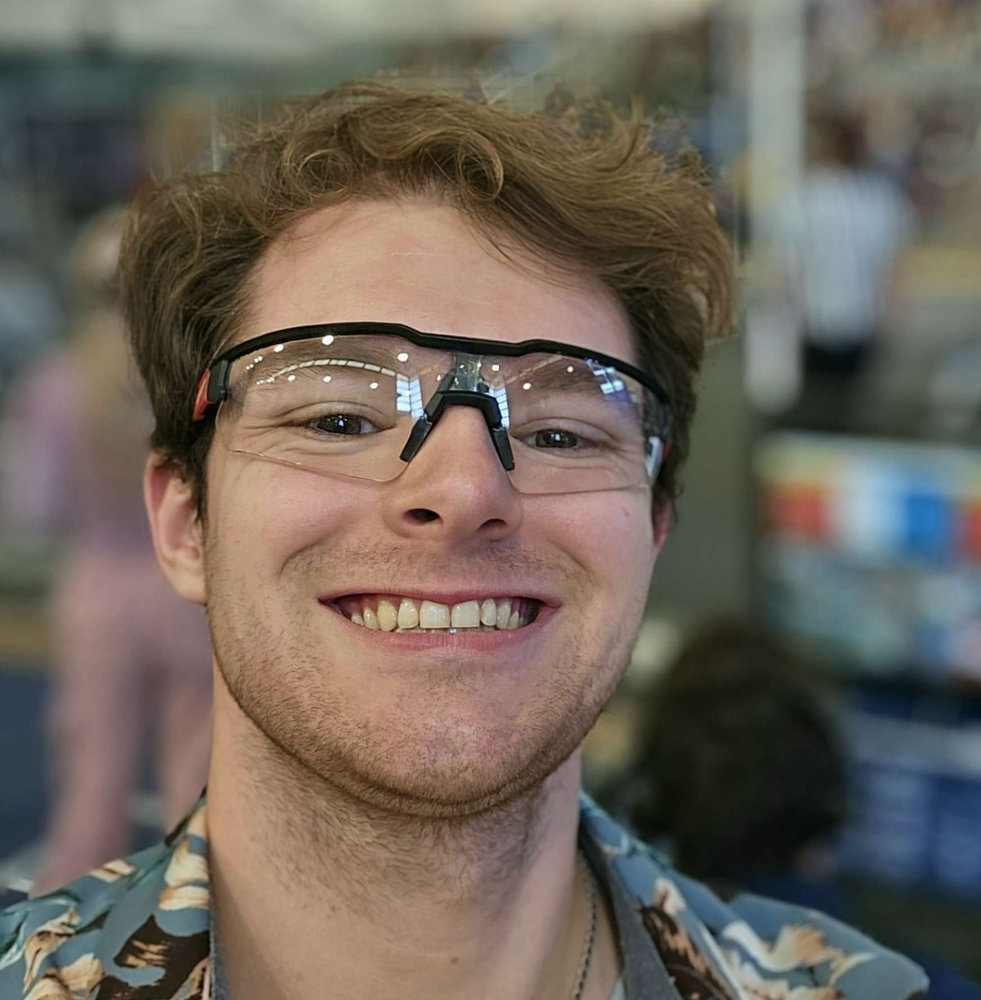

Welcome to our portfolio, showcasing the work we've done for the Robotics 421 class during the Spring term of 2024. Use the tabs at the top to navigate between the different lab mates on our team and explore their individual projects and "About Me" pages. Under the "Team" tab, you'll find some of our group projects, including the class-wide pupper race and our "Dog-a-pult" project. In the "Dog-a-pult" project, we built and programmed a mini pupper to launch a marble into a box using only an April Tag for guidance.
Throughout the term, we worked with the Misty 2 and Mini Pupper robot platforms, discovering both the challenges and rewards of building robots. We hope to continue building on what we learned in this class throughout our careers.
The Race
The video shows the final race for the class mini pupper race. We had narrowly won the primaries and then went on to win it all! We were able to get our mini pupper to move farily fast but consistenly had a problem with it moving left or right during it's inital steps. But once we got moving in the right direction our mini pupper moved fast!
Dog-A-Pult in Action!
Identifying and tracking targets is a key but often non-trivial goal of robotics.
Coupled with navigation and mechanical systems, this goal becomes the epitome of a robot’s “sense, think, act” paradigm.
For our final project, our goal was to:
• Identify a target (a box with an AprilTag)
• Navigate to a defined location relative to the target,
• Use a mechanical system to launch an object (Catapult to launch a marble)
• Land in the desired spot. (The box!)
With plenty of adjustment and attempts, we were able to land the shot!
Our Mini Pupper robot can successfully identify the box, get up close, and even aim itself center before releasing a servo-actuated
catapult, with most errors due to the low friction between the robot's feet and the ground--something worth exploring how to
solve for future experiments.
About Me
My name is Justin Thomas and I am a fourth year mechanical engineering student graduating
from Oregon State University in June 2024. I'm passionate about applying my knowledge in
design, electronics, coding, robotics, lean manufacturing, and AI to drive innovation.
Misty - Rock, Paper, Scissors
Using the Misty Blockly coding interface, I created a program that allows a user to play
rock, paper, scissors against Misty. Using the bump sensors, you choose your decision
and Misty will randomly choose a decision. Based on if you win or lose, Misty will react.
Fisrt to two wins is the champion.
Misty - Red Light, Green Light
Using the Misty python coding interface, I was able to create a Red Light, Green Light game.
First, Misty will ask if you are ready to play in which you will answer verbally yes or no.
When the game starts, Misty will say "red light" and turn the LED red. If you move durring
the red light phase, if you move you lose. Misty will then say "green light" and turn the LED
green. During this phase, you can move and you will be safe. These phases last for a random
amount of time. Once you are close enough, you can tap a bumper to win the game.
Mini Pupper - Catapult
For my third artifact, I worked with the mini pupper robot. I was tasked with the
creation and testing of the physical catapult. I first created multiple ideas on how
I could tackle this step. Taking the positives of each idea, I was able to choose a
final design to create. Using aluminum, plastic boards, and steel bolts and springs,
I created our catapult that could attach on the pupper robot. It launches automatically
with a servo, and the marble travels about four feet forward.
About Me
Welcome, my name is Zachary Mossbarger but most people refer to me as "Mossy".
I am a 6th year Engineering student at oregon state university(OSU) persuing a degree in Mechanical Engineering.
My focuses are sustainibility and longevity in mechanical design. I intend to utilize the skills I've learned at OSU to combat wasteful trends in consumer and industry design solutions.
Open sourcing, modularity, sustainable material selection, and intentionality in design are principles important to me I intend to advocate for.
Outside of the classroom I spend alot of my time attemting renter freindly home remodel projects, redesign concepts for consumer products I regularly use, and at music festivals.
In recent years my interests have pivitoted towards working with local DJs in the Portland-Seattle region design concepting/building lighting and staging that would otherwise be out of price range.

About Me
My name is Daniel Eastman! I'm a senior-standing Mechanical Engineering student with the
Robotics option, and I plan to graduate in spring of 2025. I hope to create solutions
and systems that measurably improves people's day-to-day lives, bridging the gap between
us and the machines we use. This portfolio is my current attempt at this goal.
Misty - A Normal Interaction!
First utilizing the Misty Blockly coding language, I created a conversation chain using
natural language processing tools. Misty leads the conversation, and the user can naturally
respond. Their answers evict emotions of grace (or judgement!) from Misty. Answer carefully!
Misty - Beopardy!
No copywrite infringement here! This interaction is created using the Python API for Misty.
This game is similar to the very-copywrited Jeopardy, but is distinctly different...
Answer each question correctly--you only get three tries per question. Don't forget to say
"What is"! Using SpeechRecognition in Python and the Whisper API, processing is done outside
of Misty to avoid issues experienced with the onboard NLP tooling of Misty, enabling more
accurate choice and response interactions.
Misty - Tracking AprilTags
Now using onboard Python code on the Mini Pupper robot, this individual artifact was dedicated
to tracking an AprilTag and making that location data available to other systems, where
actions like robot navigation or emotions could be triggered.
About Me
My name is Mitchell, and I am currently a senior at Oregon State University pursuing a degree in Mechanical Engineering. My passion for building and creating is evident not only in my academic projects but also in my personal hobbies, which include mixology, cooking, and disc golfing. This portfolio highlights my work from the ROB - 421 class, focusing on programming robots, where I blend my technical skills with creative problem solving.
Misty - Comedy routine
For my first artifact, I programmed misty to perform a comedy routine where she waits for the audiences response afterwards and responds accordingly.
I origonally invisioned Misty walking around and gesturing at the audience. However for the sake of time I had her stand still and simply move her arms back and forth.
This project was coded using the blockly code language which turned out to be very frustrating as it didn't allow for conventional coding structure, making the process repetative and tedious. Any changes to a simple gesture needed to be reconfigured for each point in the set, this lead to jagged motion and discontinous voice lines. However I was able to get a working demo completed and misty gave a great show!
Misty - Follow Left or Right
My second artifact was the most difficult for me. I wanted to have Misty use her cameras to detect a person and follow them around the room. I succeeded in being able to get a RTSP stream from the webcam and was able to run object detection through openCV and YOLO. However the stream was far to slow, having about a 8 second delay, causing the directions sent to misty unreliable and often overlapping with eachother. I spent a lot of time trying to optimize the stream in order to improve the latency using ffmpeg and much lower resolutions, but I was unable to solve the problem.
Eventually I pivoted to using Misty's voice recognition system to tell her where to go. This also has several problems, so I further pivoted to using a voice recognizing fuction that could tell if the user said yes or no. I used this fuction to have misty move left when the user says no, and right on yes. The outcome of this project was far simpler than I origonally desired, and I still feel like I could get the object detection system working with a better RTSP stream from Misty's webcam.
Mini Pupper - Sense Person and Acknowledge
My third artifact consisted of using a web cam and a DAC + speaker connected to a mini pupper to detect a person infront of the pupper and respond with a voice line. This project built on the work I had done for artifact 2 with the Misty, as I was able to use much of the object detection code I had written for it. The code analyzes the camera stream with the YOLO object detection library, and draws a box around any detected objects. I was able to determine the center of this box for any person in the cameras feild of view and used that to determine if someone was standing infront of the pupper. The program then actiavates the speaker with the "hello there" voice line.
About Me
Hello.
My name is Declan Murray. I am a fourth year Mechanical Engineering student at Oregon State University. I am passionate about design as my hobbies include 3D modeling and printing, coding, and biking. This portfolio demonstrates my work in Robotics 421 on the Misty II robot and Minipupper.
Misty - Touch Command
For this artifact, I attempted to use Misty's touch sensors to drive it around objects using the built in blockly coding tools.
Using these controls, Misty was able to drive around an obstacle placed in front of her, turn around and go back to where she started, or do a full loop around the obstacle.
Misty was able to perform all these movements and end up in predetermined locations repeatedly without issue.
Misty - Yep, that's a...
Built into Misty is an object detection function and a built in system that lets her identfy objects from premade categories. Using this function, I had Misty ask for several specific objects. These objects were a book, a person, and a backpack.
While the detection software is rather crude, Misty was able to identify all the objects I wanted it to and Misty did not get stuck on repeat identifying the same thing multiple times. Misty was very fast in acquring and identifying objects with a high degree of accuracy, only faltering when more than one of the desired objects was in her field of view.
Minipupper - Strafe that way
For this artifact, I wanted to be able to get the pupper to move side to side using hardware interface commands. In theory this method would give me more precision and control in how the robot makes any individual move.
However in practice, the pupper was far less stable and movement in any given direction was was more luck based. While this movement system is less robust, it is more precise with how each servo in the leg moves, allowing for selected motions to be made rather than a general movement system in the basic code. Because of this, our team has more control in making the robot move.